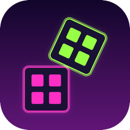
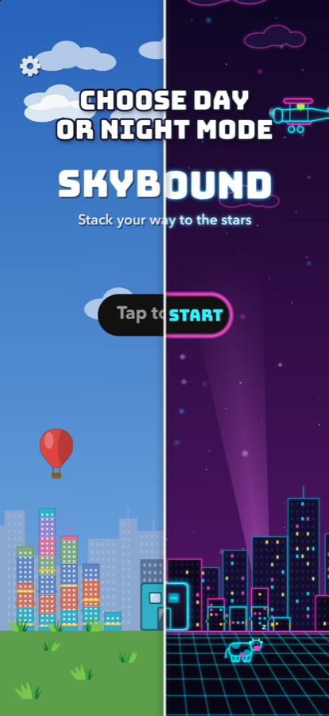
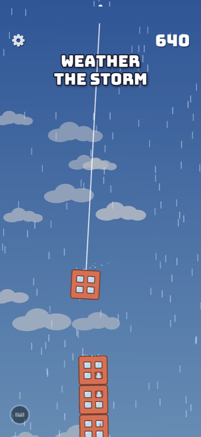
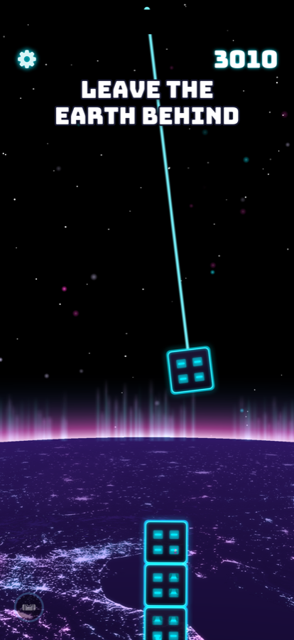

SKYBOUND TOWERS
Stack a tower to the stars
Download on the App Store


The game
A crane swings each block over your tower. Tap to drop it. Land it dead center for a PERFECT; miss the edge and the top floors come down. Every stretch of sky adds something: rain makes landings slippery, wind pushes your blocks, snow hides the tower, then the air thins and you're in space with asteroids, a black hole and a UFO after your top floor.
- Combo. PERFECT landings start a combo meter. Keep landing to keep it going; when it runs out you get a bonus, and the bigger the combo the bigger the bonus.
- Residents. Every block you land, people move in. The better the landing, the more of them, and everyone still home at the end joins your city's population.
- Two looks. Daylight is a calm climb through a painted sky. Neon Night turns the same game into an arcade with a trance soundtrack. Switch any time.
- Zen. A second way to play with no points and no power-ups: just the music, the weather and the thud of each landing.
- Your city. Every tower you build takes its place in the skyline behind your next game, up to twenty of them.
- Game Center. Three leaderboards, including a weekly one that resets, and nineteen achievements.
Frequently asked
- How does the combo work?
- A PERFECT landing starts it and a bar appears with your combo count. Keep landing before the bar runs out to keep the combo alive; another PERFECT refills it. When the bar runs out you're paid a bonus in points and new residents. A miss or a topple loses it.
- What are the hearts under the score?
- Your lives. A climb starts with two: one topple is survived, the next ends it. A heart balloon gives you one more, and so does every fifteenth PERFECT landing in a climb.
- What's a super block?
- Build your combo to five and the crane hands you a wider block, easier to land and to land on. Another comes at ten, then fifteen.
- Why did my tower straighten itself?
- Every ten PERFECT landings in a climb, Straighten Up lines the tower back up for you. There's nothing to press.
- What does Zen change?
- No score, no combo, no bonuses, no balloons or UFOs. Three hearts; a miss takes one, and nothing topples. Pick Climb or Zen under Tap to Start, or at the top of Settings.
- Where are my scores stored?
- On your device. If you're signed in to Game Center, your best score and tallest tower are also sent to its leaderboards.
- How do I turn the music or sound off?
- Tap the gear in the top-left corner. Music, sound effects, haptics and the look are all in Settings.
Support
Questions, bugs, or ideas? Email marcnew2101@icloud.com. Please include your iPhone model and iOS version if you're reporting a problem.